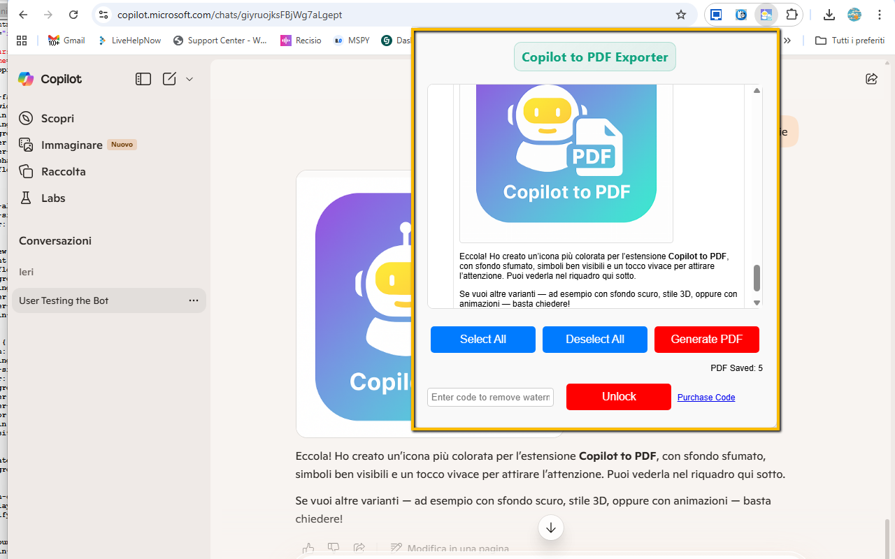
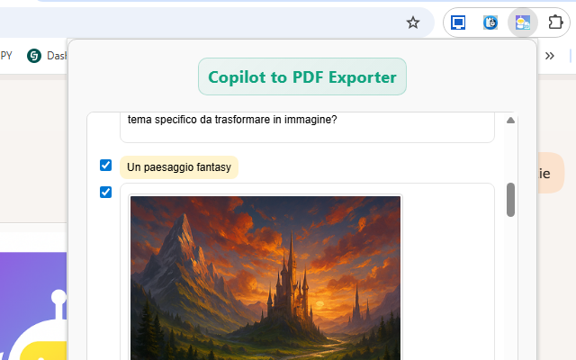

Copilot to PDF Exporter
Copilot to PDF Exporter lets you save and archive your Microsoft Copilot conversations as clean, well-formatted PDF files — including both text and AI-generated images. With a single click, your entire chat history becomes a shareable PDF, perfect for research, documentation, study notes, coding help, or long-term reference.
The extension automatically captures the full conversation from your Copilot tab, preserving message order, basic formatting, and inline images. You can export the entire chat, or use the built-in selective export mode to choose only specific questions and answers you actually want to keep. The resulting PDF uses a layout optimized for readability, with clear chat bubbles, spacing and alignment that feels very close to the original Copilot interface.
Unlike simple “print to PDF” workarounds, Copilot to PDF Exporter is designed specifically for AI chat logs: it handles long, multi-step conversations, preserves images generated by Copilot (no broken icons or empty placeholders), and avoids clutter. Your export looks like a clean report or email, ready to be shared, printed, cited in research, or stored in your personal knowledge base.
All processing happens locally inside your browser. Your conversation is never uploaded to external servers. In the Free version, exports are fully functional with a small watermark. By unlocking the PRO mode, the watermark is removed and you can enjoy unlimited, professional-looking exports.
Install Copilot to PDF Exporter from the Chrome Web Store✨ Key Features & Benefits
- One-click export: save full Copilot chats to PDF with a single click from the extension popup.
- Images included: AI-generated images are embedded directly in the PDF — no broken icons or missing thumbnails.
- Clean, readable layout: chat-style formatting, bubbles, spacing and alignment optimized for comfortable reading.
- Selective export: optionally choose only specific messages (questions/answers) before saving the PDF.
- Works with long chats: handles multi-step, extended conversations without cutting content.
- No watermark in PRO: free version adds a small watermark; PRO removes it for a professional look.
- Local processing: everything is generated in your browser; no external servers involved.
- Ideal for: students, researchers, developers, writers, consultants and anyone who relies on Copilot.
🧓 Free vs ⭐ PRO
Free Version:
- Fully functional PDF export of your Copilot conversations.
- Includes both text and images generated by Copilot.
- Small watermark added at the bottom of exported PDFs.
PRO Version (unlock by code):
- No watermark: produce clean, professional PDFs suitable for clients, reports and publications.
- Unlimited exports: use the extension as much as you want for your daily workflow.
- Upgrade simply by entering your PRO unlock code in the extension popup; status is stored locally.
🧭 How It Works
- Install Copilot to PDF Exporter from the Chrome Web Store.
- Open a Copilot conversation in your browser (for example, on the Copilot web interface).
- Let Copilot finish generating answers and images you want to save.
- Click the extension icon in the toolbar to open the popup.
- Choose whether to export the full chat or select specific messages only.
- Click Export to PDF.
- The extension processes the conversation locally and builds a structured PDF with questions, answers and images.
- Choose the download location using your browser’s standard save dialog.
- Open the resulting PDF in any PDF reader, share it, print it, or archive it in your notes system.
📌 Ideal For
- 📚 Students: save study answers, exam prep sessions and Q&A summaries as structured PDFs.
- 🧪 Researchers: document prompts, outputs and experiments for future reference or citation.
- 📌 Content creators: export drafts, outlines, post ideas and content plans created with Copilot.
- 🧰 Developers: archive debugging sessions, code reviews and coding assistance threads.
- 🧠 Knowledge workers: build a personal knowledge base of AI-assisted notes, briefs and reports.
- 📂 Anyone: who wants to save, print, organize or share Copilot conversations just like emails or documents.
📷 Screenshots


🔒 Permissions & Privacy
Copilot to PDF Exporter is built with privacy in mind. Your conversations remain on your device: the extension does not upload chat content to external servers and does not require an account. All processing is done locally in your browser using only the data visible in the Copilot tab.
The extension typically needs a small set of permissions to function correctly:
- activeTab / host permissions: to read the Copilot conversation content in the current tab when you trigger the export.
- scripting / tabs (depending on manifest): to inject the capture logic and extract text and images from the page.
- downloads: to save the generated PDF file to your computer.
- storage: to remember your settings, last options and PRO unlock status.
Your data is:
- Not tracked: browsing history is not collected.
- Not sent: chat content is not transmitted to third-party servers.
- Stored locally: configuration data remains inside your browser.